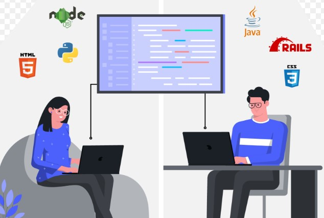

Navigating Real-World Development.
During my final year at the University of Manoa, I embarked on a remarkable journey during my Software Engineering 2 class that shaped my project management, teamwork, and client communication skills. A class whose experience has not just been an academic challenge but one that has elevated both my technical and interpersonal abilities, allowing me to thrive in an engaging, real-world environment. Working on a website for a real company has been an exciting opportunity to bridge theory and practice. At the core of this experience is the power of collaboration.
Once into teams, we made our primary focus communication and interconnection to allow for clear expectations that enabled us to tackle challenges head-on. Simultaneously, GitHub became the backbone of our project, providing structure for managing code and tracking our progress. By setting meaningful deadlines and adhering to them, we were able to foster a steady workflow aligned with our customer’s goals. I took a leadership role in client meetings and felt the weight of responsibility as I guided my team in articulating our progress while gathering essential feedback. This experience revealed the importance of clear direction, accountability, and adaptability in achieving our shared aspirations.
Engaging closely with clients helped hone my ability to create products that genuinely met their needs. Our regular meetings became vital touchpoints for updates and insights, refining the “Inspire” website. The feedback we received was a crucial reminder of the iterative nature of development and the significance of aligning with a client’s vision, underscoring that client satisfaction is fundamental to a project’s success. Another pivotal aspect of this course was my growth in public speaking. Taking on the role of the primary presenter during client meetings propelled me beyond my comfort zone, fostering confidence, clarity, and professionalism. Sharing our progress and addressing feedback in real time helped hone my ability to engage with clients. Initially challenging, public speaking became a platform for improvement, fueled by constructive input from clients, teammates, and my professor. Each step forward significantly strengthened my communication skills, which are vital for my future career goals.
This time has prepared me to tackle future challenges in my professional and personal life. I have cultivated essential skills in project management, client communication, and teamwork that I will carry into my career. This course has deepened my understanding of delivering high-quality work while balancing deadlines and client expectations. As I continue my journey, I will reflect on the invaluable lessons learned here, using them to navigate future projects with purpose and professionalism.